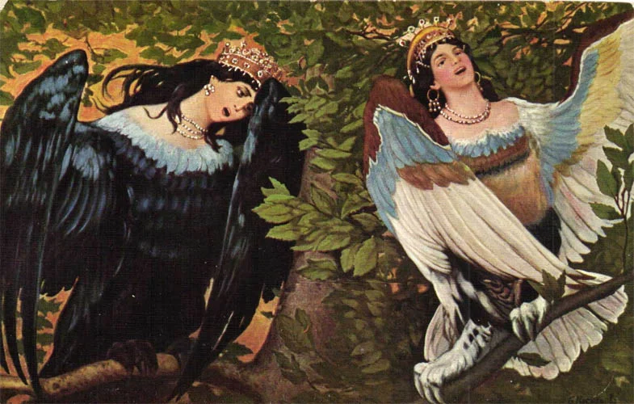

Птица Сирин др.-рус. сиринъ ← греч. Σειρῆνες «сирены») – райская птица-дева из средневековой книжной мифологии, образ которой восходит к древнегреческим сиренам. В западноевропейских легендах Сирин является воплощением несчастной души. В русских духовных стихах Сирин, спускаясь из рая на землю, зачаровывают людей своим пением. Часто упоминается вместе с другой райской птицей — Алконостом.
Обе тицы пленяют людей своим пением так, что «душа из тела исходит».
На рисунках вещая птица Сирин изображается везде одинаково: прекрасная большая птица с головой женщины и грустным лицом. Взгляд ее задумчив и пронзителен, а большие голубые глаза передают ту тоску, которая сидит внутри ее. На некоторых полотнах ее можно увидеть с большими взмахами крыльев. Сидит она, как правило, всего в цветущих кустарниках, на ветках деревьев или у воды. На голове красуется корона, которая символизирует ее божественное начало.
Ее частое сравнение с сиренами сильно путает писания разных народов. Сирены проживали вдоль берегов морских и заманивали путников на верную смерть. Даже внешне они сильно различались, ведь девушки – сирены были морскими существами и больше напоминали русалок. Сирин была прекрасной птицей, с женской грудью и красивыми крыльями. Она очень любила свой облик, и тщательно чистила каждое перышко, сидя на райских деревьях.
Древние изображения необычной птицы поражают воображение. Перед любопытным взглядом исследователей предстает прекрасное тело женщины по пояс с гигантскими крыльями вместо рук и темным оперением. У птицы невероятно красивое женское лицо, на котором, в зависимости от изображения, могут проявляться гнев, благосклонность или таинственная задумчивость. Оперение Сирин, в основном, синее или темно-фиолетовое, темные оттенки олицетворяют двойственную природу птицы и предупреждают о ее темной стороне.
Рожденная в райских садах птица Сирин обладала следующими уникальными особенностями:
- волшебный голос – голос прекрасного создания мог очаровывать даже богов, а простые смертные забывали о своей земной жизни и стремились в райские сады, о которых пелось в песнях;
- мудрость – мистическая птица могла показать человеку скрытые тайны бытия или наделить его уникальными дарованиями;
- способность повелевать стихиями – в некоторых источниках Сирин наделяют властью над бурями и грозами.
Посланница рая с прекрасным ликом и магическим голосом считалась предвестницей несчастий и бед. Дело в том, что уникальный образ славянской мифологии наделен тайной, темной стороной, которая уравновешивает все положительные свойства волшебной птицы.
Посланница рая, знающая тайны мироздания и имеющая неограниченную власть над человеком, являлась взору смертных перед природными катаклизмами или несчастьями. Люди боялись сурового вестника невзгод и старались предупредить появление птицы, создавая сильный шум. В любом месте и в любое время могла появиться птица Сирин, картинки с ее изображением порой выглядят устрашающе, показывая магическое создание на фоне темнеющего неба.
Древние предания гласят, что мистическая птица настолько завораживала людей своим пением, что они забывали о своем доме, родных и близких и уходили в неизвестном направлении, чтобы пропасть навсегда. Вслушиваясь в мелодию прекрасной песни, простые смертные теряли рассудок и устремлялись на поиски райского блаженства. Если же Сирин открывала людям какие-либо тайны, им приходилось за это дорого платить, расставаясь со слухом, зрением или молодостью.
Как и другие мифические существа, Сирин обладала даром одурманивания и полного управления человеком. Легенда гласит, что стоит только услышать ее пение, человек будет следовать за ним, пока не погибнет. Божественная птица гуляла в райских садах или по берегу моря и искала заблудившихся. Ее потрясающий голос раздавался за леса и горы и даже животные сбегались к ней, чтобы насладиться им. Стоит отметить, что лесным жителям она не приносила никакого вреда.
Прекрасная Сирин усыпляла только мужчин и забирала их в свои владения. Будучи близкой родственницей сирен, она никогда не возвращала их обратно в мир людей. Они оставались в ее владениях, до самой смерти. Ей не нравилась ее судьба и своими поступками она пыталась выразить свое недовольство богам. Но Зевс никак не реагировал на ужасные поступки и ей ничего не оставалось, как только продолжать жить такой жизнью.
